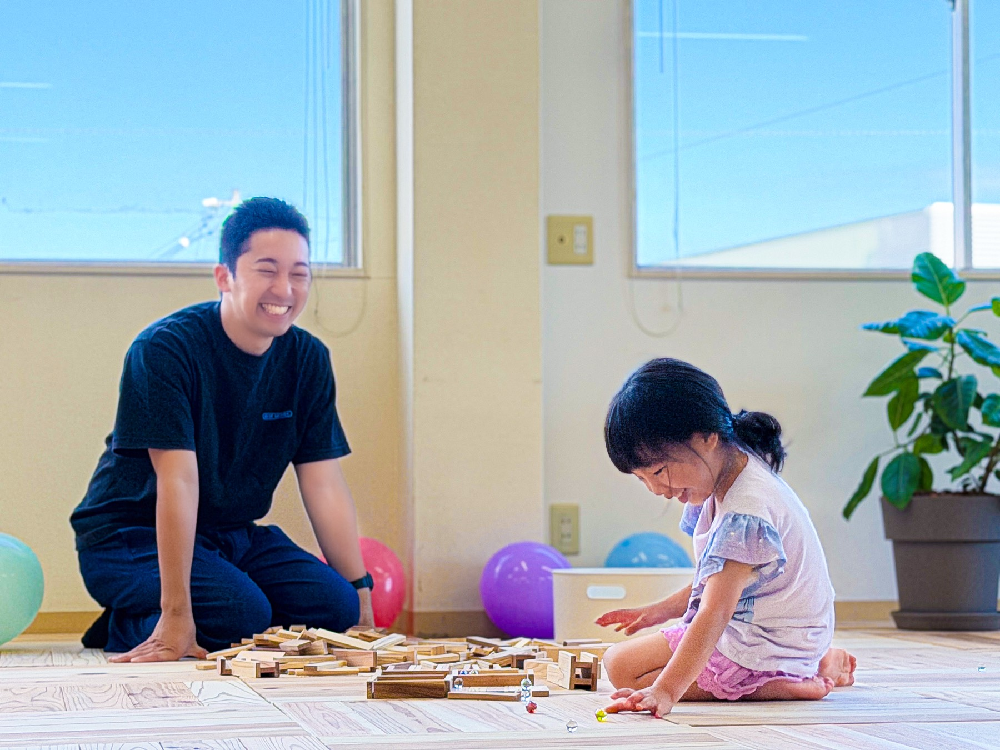

Early Intervention
主体性という、土台を育てる。
「どうして？」を
「こうすれば！」に変える場所。
「なぜうちの子は、みんなと同じようにできないんだろう…」
そんな風に悩み、自分を責めてしまうことはありませんか？
これらは、毎日子育てを頑張っているからこそ生まれる、保護者の方の「あるある」なお悩みです。
しかし、これらは決してただの「困った行動」や「ワガママ」ではありません。実は、こうした行動の裏には「こどもなりの切実な理由」が隠れているんです。
だからこそ、私たちが目指すのは、こどもを叱って無理やりルールに合わせることではありません。「その子が一番生きやすい環境とやり方」を、大人が一緒に見つけ出すことです。

〜「その子だけの取扱説明書」を一緒に作る伴走者〜
こどもの特性や「こうしたい！」という気持ちは、とても大切です。しかし同時に、小学校という集団社会に向けたルールや、保護者の方の「こうなってほしい」という思いがあるのも現実です。
私たちが目指すのは、こどもの希望と、社会のルール・大人の思いを「どうすり合わせるか」です。
どちらかを我慢させるのではなく、お互いにとって一番「心地よいやり方」を、専門的な視点から探り当てていくこと。
保護者の方もこども本人も、ホッと息をついて笑顔になれる。私たちは、そんな「その子だけの取扱説明書（トリセツ）」を一緒に作っていく伴走者でありたいと願っています。
発達に特性のあるこどもたちは、音の過敏さや見通しが立たない不安など、常に目に見えない「不快感」と戦っています。心がいっぱいになっていると、些細なことでキャパオーバーになり、癇癪や拒否となって表れます。
だからこそ、私たちは「無理に枠にはめる」「頭ごなしに否定する」ことはしません。徹底的な「観察」から専門的な視点で仮説を立て、環境を変える。この「仮説と検証」の繰り返しによって不快感を取り除き、大切な療育が届くための「心の余裕」を生み出します。
私たちが大切にしているのは「こども中心」の療育ですが、これは決して好き勝手にさせる放任ではありません。こどもたちが安心して自分らしく過ごせる「ルールと秩序のある環境」を、大人が戦略的に整えることを意味します。
大人の手を借りずとも、「出す→遊ぶ→片付ける」を自分一人で完結できる「こどもサイズ」の環境設定。この環境の中で自ら選び、試行錯誤し、「自分で決めた」「できた」という小さな成功体験を積み重ねます。
私たちは「ここは安全で、大人は自分の味方だ」と思える安心の土台を何より大切にしています。この安心感があるからこそ、失敗を怖がらずに自分の意志で試行錯誤する「生きた学び」が生まれます。
放置ではなく、こどもの「自分で選ぶ」を温かく見守り、必要な時だけ手を差し伸べる。この信じて待つ姿勢こそが、私たちの高度な専門性です。
1部
14:00〜15:45
2部
15:50〜17:35
〜「見えない力」が、10年後の基盤になる〜
私たちが目指すのは、目先の「文字が書けた」「静かに座れた」といった表面上のスキルだけではありません。
自分を認められた安心感の中で育つ「自分の気持ちを伝える力（言語化）」や「何度でも試せる折れない心」。この目に見えない「心の根っこ」こそが、将来子どもを守る最大の武器になります。
自分の気持ちやSOSを正しく言葉で伝えられる力は、小学校やその先の社会で直面する対人トラブルを防ぐ最大の防御になります。
「失敗しても大丈夫」「自分ならなんとかできる」という体験ベースの自信は、誰かと比べられることで崩れることがありません。これが10年後の社会的な自立を支える確かな土台になります。
この子が、自ら育む。
| 対象 | 未就学児（3歳半〜6歳） |
|---|---|
| 定員 | 10名 / 日 |
| 営業時間 | 平日：9:30〜18:30 土・祝：9:00〜18:00 |
| 休業日 | 日曜・年末年始・お盆など |
| 送迎 | 保護者による送迎 |
| 所在地 | 岡山市北区辰巳26-102 2F |
お気軽にご相談ください。
お電話はこちら
086-245-9880